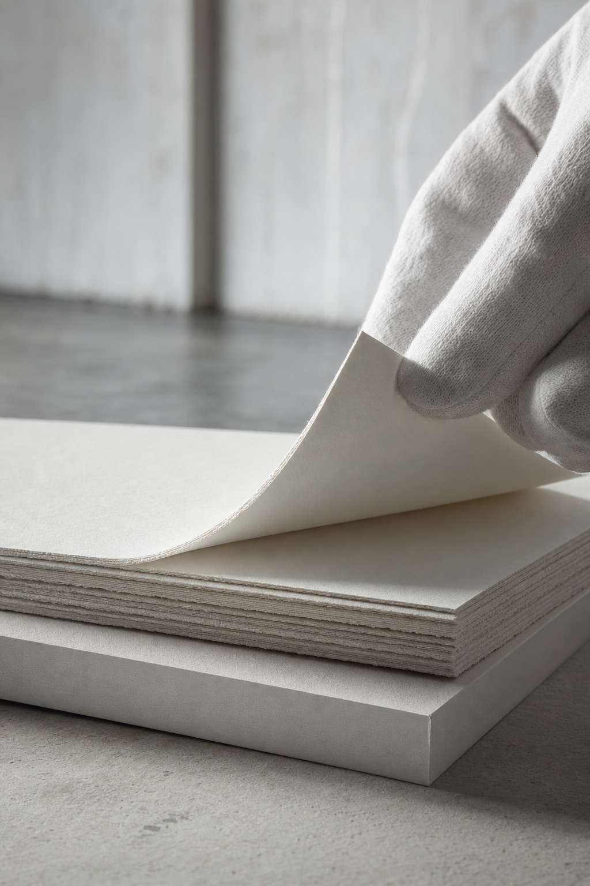
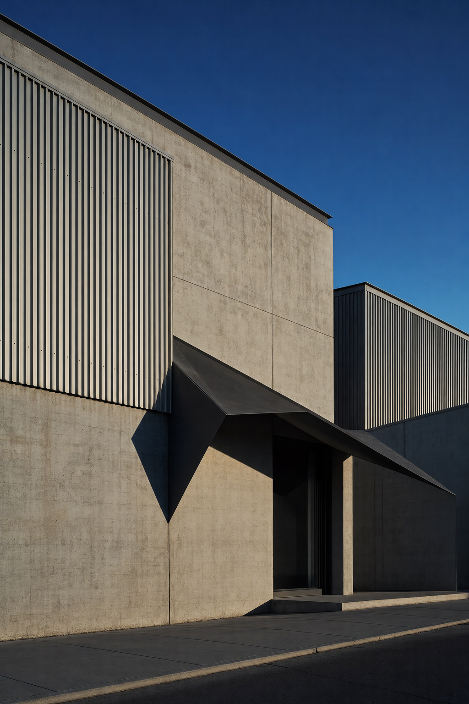

01 · The read
Collage lives at two distances.
Jordan, Nelson Taylor here. I direct and shoot brand content in Dallas–Fort Worth. I've been reading Ro2's exhibitions page, where a new show arrives most months, and next on the list is a new show of collages, opening Oct. 24.
Collage is an art of edges. From across the room you take in the whole composition and the wall it sits on. Up close you see what it's made of: a cut line, one layer of paper over another, the seam where two images meet. A phone screen usually holds one of those distances at a time.
So the idea is to give it both, on purpose, every time. Far: the room at full scale, in its own light. Near: the camera at macro distance on paper, edges and a gloved hand. One of each, cut vertical, makes a week.

Near · the edgeCreative direction — treatment frames, not final footage.
02 · The format
Near / far.
Two shots a week, always as a pair. One detail close enough to see the cut, and one wide that sets it in the room it belongs to. The pairing stays; the pieces change, for the length of a show.
And because Ro2's calendar turns over most months, the format doesn't stop when a show does. When the next one opens, the pair carries straight into it, so the feed keeps one rhythm the gallery owns, and nobody on the team has to step in front of the lens.
Far · the roomCreative direction — treatment frames, not final footage.
Near · the edgeCreative direction — treatment frames, not final footage.
03 · What we'd shoot
One day, six mats.
A day inside the run of a show, on a date the gallery picks, around open hours. The room, the paper, the hands, the light and the street. No visitors on camera and no faces; hands are gloved.
-
Mat 1 · the room, farCreative direction — treatment frames, not final footage.
The room, wide
Morning, before the doors. The whole room from one corner, wide and slow: the height of the walls, the light lying across the floor.
-
Mat 2 · the edge, closeCreative direction — treatment frames, not final footage.
The edge, close
Macro distance on the paper: an edge, a layer, a cut line. Only on the pieces you and the artist choose.
-
Mat 3 · the hand, closeCreative direction — treatment frames, not final footage.
The hand
A gloved hand turning a sheet, lifting a board, setting it down. Hands only, never faces.
-
Mat 4 · the wall, farCreative direction — treatment frames, not final footage.
The wall, full height
One wall top to bottom with a single piece small inside it, as allowed, or the wall bare and lit.
-
Mat 5 · the light, closeCreative direction — treatment frames, not final footage.
The light
Where the light lands: a bright edge on white, a wall's shadow stretched across the floor.
-

Mat 6 · the street, farCreative direction — treatment frames, not final footage.
The street
Late afternoon outside: the low sun across the building's angular front, and the Tin District around it.
All day, the A7RV builds a stills bank from the same room and the same light, for the website, the feed and the next announcement.
The hand, closeCreative direction — treatment frames, not final footage.
04 · On the work
The artist decides how close.
The work belongs to the artists. How close the camera gets to any piece, or whether a piece is in frame at all, is decided by you and the artist, one piece at a time, before anything is shot.
Nothing about the day depends on a yes. If a piece is off limits, the room, the light, the paper and the gloved hands still carry the week, and the near shot simply turns to a bare edge or a blank sheet.
05 · The day
What the day is.
Plainly, start to finish.
- One shoot day at Ro2 ArtI direct and shoot it myself, in the gallery and outside it, on a day that suits the show.
- Sony FX6 + Sony A7RVThe FX6 for motion; the A7RV for stills and hybrid.
- Vertical-firstEvery deliverable is cut 9:16 for Reels, TikTok and Shorts.
- An edited set of vertical videos + a stills bankFrom the same day and the same light, built to run for a quarter.
- Two rounds of editsDelivered in about two weeks.
Anything past that is a conversation for a call.
Far · the streetCreative direction — treatment frames, not final footage.
06 · Behind the camera
Who's shooting.
I'm Nelson Taylor, and Taylormade Creative is my studio in Dallas–Fort Worth. I've spent fourteen years in design and creative direction, much of it on things made to be looked at closely: type, layout, print. Most of my work now is brand content that I direct, shoot on the FX6 and A7RV, and cut myself.
Client work over the years includes Toni & Guy, Lava Cantina and KFC, and recent content work includes TONI&GUY Academy and Dreamcatchers Hair.
In a gallery the camera works for the room, not the other way around. Nothing is filmed that hasn't been agreed, and the person who frames each shot is the one who edits it.
- Fourteen yearsdesign and creative direction
- FX6 + A7RVmotion and stills from one kit
- 9:16framed for the phone from the first setup
- Shoot to editone pair of eyes throughout
Far · the ceilingCreative direction — treatment frames, not final footage.
Far · the floorCreative direction — treatment frames, not final footage.
07 · Whenever suits
At Ro2's pace.
Read this whenever there's a quiet hour. If near / far feels like Ro2, I'd be glad to talk it through on a short call: strike what doesn't fit, add what I've missed, and pick the show it suits.
If it isn't the moment, "not yet" is an easy answer, and the idea keeps from one show to the next.
Write to NelsonFounder & Creative Director · Taylormade Creative
(817) 707‑1291 · taylormademd@gmail.com
www.taylormadecreative.net · @taylormade_creative